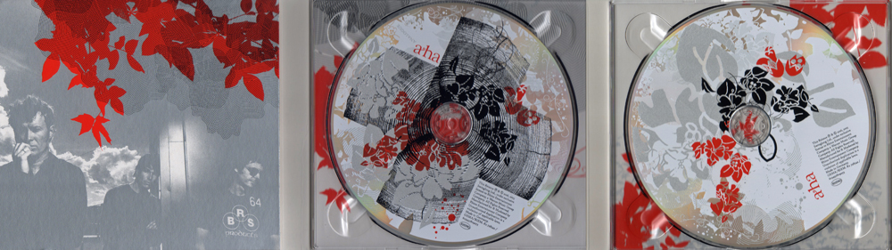

Analogue 20th Anniversary Deluxe edition (17.04.26) / Analogue 20th Anniversary Record Store Day LP (18.04.26)The album "Analogue" was released as a 20th Anniversary deluxe edition on 17 April 2026 in Europe. It comes in a gatefold digi pak card sleeve. The album artwork is the same as the original deluxe digi pak release except for the inside of the left hand flap which now features a silver toned shot of the band standing outside (Magne, Morten, Paul) wuth clouds in the sky and some of the red Analgue leaf artwork at the top. The rest of the artwork is the same with a black and white picture of the band (Paul, Morten, Magne) against a white background. Over the picture there are some black, white and red artistic leafy designs plus a red a-ha logo and white title (in an arc over the second "a" of "a-ha") on the right hand side. Like the original release, the reverse of the album is black with a silhouette shot of the band standing in an open doorway. The cover art was desiged by Martin Kvamme. p>The release comes with a 12-page lyric booklet booklet which, although of similar design to the original 8-page booklet, includes a six side piece about the recording of the album by Kieron Tyler, MOJO, November 2025. It includes individual black and white shots of the band members. 3 sides of information on the tracks printed over the top of a silver tone band shot, plus a double spread of album crits on a white background with Analogue style red artwork at the sides replaces the original single side of credits.  It is a two disc release with discs of similar design to the original Deluxe CD and DVD set but with updated publishing and copyright information and catalogue number. The silver sticker on the front states "20th Anniversary Deluxe Edition Featuring Three Unreleased Tracks, Alternate Versions, and Remixes R2 728542 / 603497809073&quo; in white and black text. Three of the bonus are on the end of disc one after the standard album tracks and the second disc includes another 17 tracks. Tracks Disc 1: Celice (3:41) / Don't Do Me Any Favours (3:51) / Cosy Prisons (4:08) / Analogue (3:48) / Birthright (3:45) / Holy Ground (4:00) / Over The Treetops (4:24) / Halfway Through The Tour (7:26) / A Fine Blue Line (4:09) / Keeper Of The Flame (3:58) / Make It Soon (3:21) / White Dwarf (4:24) / The Summers Of Our Youth (3:56) // Case Closed On Silver Shore (4:28) / Cost Prisons (Radio Mix) (3:59) / Analogue (CG's Slow Motion Edit) (4:13) / Celice (Paul Van Dyk's Radio Edit) (4:04) Tracks Disc 2: Celice (Early Version) / Don't Do Me Any Favours (Early Version) / Cosy Prisons (Original Cosy Demo) (4:07) / Minor Key Sonata (Analogue) (4:34) / Slanted Floor / Case Closed On Silver Shore (Early Version) / Birthright (Early Version) / Holy Ground (Alternate Version) / Windfalls / Over The Treetops (Early Version) / Halfway Through The Tour (Alternate Version) / With You - With Me / A Fine Blue Line (Demo) / Keeper Of The Flame (Alternate Version) / Make It Soon (Early Version) / White Dwarf (Early Version) / The Summers Of Our Youth (Demo) The album features songs written by Magne Furuholmen (tracks 2,3,9 and 13); Paul Waaktaar-Savoy (tracks 7,8,10 and 12); Morten Harket and Ole Sverre Olsen (track 11); music collaborations between Magne and Martin Terefe using Magne lyrics (tracks 1 and 5); music collaborations between Paul Waaktaar-Savoy, Martin Sandberg and Magne Furuholmen using lyrics by Paul and Martin (track 4) plus writing collaborations between Morten Harket, Nick Whitecross, Ole Sverre Olsen with music by Morten (track 6). Bonus track 3 of disc 2 produced by George Tanderø; track 4 of disc 2 produced by Max Martin and Michael Ilbert; tracks 5, 8 and 12 of disc 2 produced by Kjetil Bjerkestrand. The album was mixed by Flood with The LP edition was released for Record Store Day on 18 April 2026, the day after the CD release. This 2 LP limited edition contains the album tracks Tracks LP1: Celice (3:41) / Don't Do Me Any Favours (3:51) / Cosy Prisons (4:08) / Analogue (3:48) // Birthright (3:45) / Holy Ground (4:00) / Over The Treetops (4:24) Tracks LP2: Halfway Through The Tour (7:26) / A Fine Blue Line (4:09) / Keeper Of The Flame (3:58) // Make It Soon (3:21) / White Dwarf (4:24) / The Summers Of Our Youth (3:56) CD
LP
| Foot Of The Mountain | List of Albums | Menu | Back to Main | |